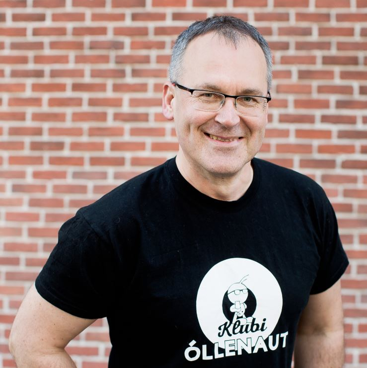

Finantsjuhtimine ja reguleeritud ettevõtlus
Urmas Roots
Finantsjuhtimise ja reguleeritud ettevõtluse kogemusega juht, kes aitab siduda nõuded praktilise ärikorraldusega. NVC-s toetab ta kliente süsteemide loomisel, mis on korras nii dokumentides, numbrites kui igapäevases juhtimises.
Räägime koostööst →